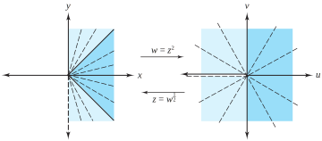
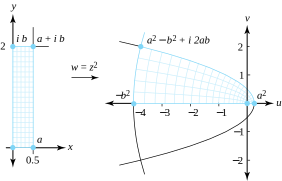
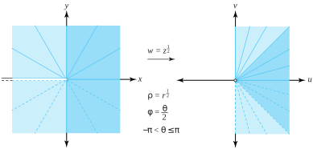
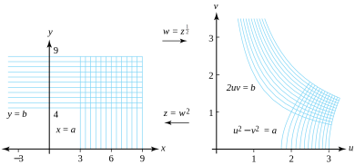
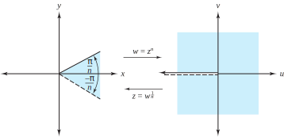

If we also use polar coordinates for \(w=\rho e^{i\phi}\) in the \(w\) plane, we can express this mapping by the system of equations
\begin{equation*}
\rho =r^2 \text{ and } \phi =2\theta
\end{equation*}
Because an argument of the product \((z)(z)\) is twice an argument of \(z\text{,}\) we say that \(f\) doubles angles at the origin. Points that lie on the ray \(r>0\text{,}\)\(\theta =\alpha\) are mapped onto points that lie on the ray \(\rho >0\text{,}\)\(\phi =2\alpha\text{.}\) If we now restrict the domain of \(w=f(z) =z^2\) to the region
\begin{equation*}
z = g(w) =w^{\frac{1}{2}} = |w|^{\frac{1}{2}}e^{i\frac{{\mathrm{Arg}}(w)}{2}}\text{,}
\end{equation*}
where \(w \ne 0\text{.}\) The function \(g\) is so important that we call special attention to it with a formal definition.
Definition2.2.1.Principal Square Root.
The function
\begin{equation}
g(w) =w^{\frac{1}{2}} = |w|^{\frac{1}{2}}e^{i\frac{{\mathrm{Arg}}(w)}{2}} \text{ for } w \ne 0\text{,}\tag{2.2.3}
\end{equation}
is called the principal square root function.
We leave as an exercise to show that \(f\) and \(g\) satisfy Equations (2.1.3) and thus are inverses of each other that map the set \(A\) one-to-one and onto the set \(B\) and the set \(B\) one-to-one and onto the set \(A\text{,}\) respectively. Figure 2.2.2 illustrates this relationship.

Figure2.2.2.The mappings \(w=z^2\) and \(z=w^{1/2}\)
What are the images of rectangles under the mapping \(w=z^2\text{?}\) To find out, we use the Cartesian form
\begin{equation}
u = x^2-y^2 \text{ and } v=2xy\text{.}\tag{2.2.4}
\end{equation}
Example2.2.3.
Show that the transformation \(w=f(z) =z^2\text{,}\) for \(z\ne 0\text{,}\) usually maps vertical and horizontal lines onto parabolas and use this fact to find the image of the rectangle \(\{(x, y) : 0\lt x\lt a, \; 0\lt y\lt b\}\text{.}\)
Solution.
Using Equations (2.2.4), we determine that the vertical line \(x=a\) is mapped onto the set of points given by the equations \(u=a^2-y^2\) and \(v=2ay\text{.}\) If \(a \ne 0\text{,}\) then \(y=\frac{v}{2a}\) and
Equation (2.2.5) represents a parabola with vertex at \(a^2\text{,}\) oriented horizontally, and opening to the left. If \(a>0\text{,}\) the set \(\{(u, v) : u=a^2-y^2, \; v=2ay\}\) has \(v>0\) precisely when \(y>0\text{,}\) so the part of the line \(x=a\) lying above the \(x\) axis is mapped to the top half of the parabola.
The horizontal line \(y=b\) is mapped onto the parabola given by the equations \(u=x^2-b^2\) and \(v=2xb\text{.}\) If \(b \ne 0\text{,}\) then as before we get
\begin{equation}
u = -b^2 + \frac{v^2}{4b^2}\text{.}\tag{2.2.6}
\end{equation}
Equation (2.2.6) represents a parabola with vertex at \(-b^2\text{,}\) oriented horizontally and opening to the right. If \(b>0\text{,}\) the part of the line \(y=b\) to the right of the \(y\) axis is mapped to the top half of the parabola because the set \(\{(u, v) : u = x^2-b^2, \; v=2bx\}\) has \(v>0\) precisely when \(x>0\text{.}\)
Quadrant I is mapped onto quadrants I and II by \(w=z^2\text{,}\) so the rectangle \(0\lt x\lt a\text{,}\)\(0\lt y\lt b\) is mapped onto the region bounded by the top halves of the parabolas given by Equations (2.2.5) and (2.2.6) and the \(u\) axis. The vertices 0, \(a\text{,}\)\(a+ib\text{,}\) and \(ib\) of the rectangle are mapped onto the four points 0, \(a^2\text{,}\)\(a^2-b^2+i2ab\text{,}\) and \(-b^2\text{,}\) respectively, as indicated in Figure 2.2.4.

Figure2.2.4.The transformation \(w=z^2\)
Finally, we can verify that the vertical line \(x=0, \, y \ne 0\) is mapped to \(\{(-y^2, 0) : y \ne 0\}\text{.}\) This is simply the set of negative real numbers. Likewise, the horizontal line \(y=0, \, x \ne 0\) is mapped to the set \(\{(x^2, 0) : x \ne 0\}\text{,}\) which is the set of positive real numbers.
What happens to images of regions under the mapping
where \(-\pi \lt \theta \le \pi\text{?}\) If we use polar coordinates for \(w=\rho e^{i\phi}\) in the \(w\) plane, we can represent this mapping by the system
\begin{equation}
\rho =r^\frac{1}{2} \text{ and } \phi =\frac{\theta}{2}\text{.}\tag{2.2.7}
\end{equation}
Equations (2.2.7) indicate that the argument of \(f(z)\) is half the argument of \(z\) and that the modulus of \(f(z)\) is the square root of the modulus of \(z\text{.}\) Points that lie on the ray \(r>0\text{,}\)\(\theta =\alpha\) are mapped onto the ray \(\rho >0, \, \phi =\frac{\alpha}{2}\text{.}\) The image of the \(z\) plane (with the point \(z=0\) deleted) consists of the right half-plane \(\mathrm{Re}(w) > 0\) together with the positive \(v\) axis. The mapping is shown in Figure 2.2.5

Figure2.2.5.The mapping \(w=z^{\frac{1}{2}}\)
We can use knowledge of the inverse mapping \(z=w^2\) to get further insight into how the mapping \(w=z^{\frac{1}{2}}\) acts on rectangles. If we let \(z=x+iy \ne 0\text{,}\) then
and we note that the point \(z=x+iy\) in the \(z\) plane is related to the point \(w=u+iv=z^{\frac{1}{2}}\) in the \(w\) plane by the system of equations
\begin{equation}
x=u^2-v^2 \text{ and } y=2uv\text{.}\tag{2.2.8}
\end{equation}
Example2.2.6.
Show that the transformation \(w=f(z) = z^{\frac{1}{2}}\) usually maps vertical and horizontal lines onto portions of hyperbolas.
Solution.
Let \(a>0\text{.}\) Equations (2.2.8) map the right half-plane given by \(\mathrm{Re}(z) >a\) (i.e., \(x>a\)) onto the region in the right half-plane satisfying \(u^2-v^2>a\) and lying to the right of the hyperbola \(u^2-v^2=a\text{.}\) If \(b>0\text{,}\) Equations (2.2.8) map the upper half-plane \(\mathrm{Im}(z) >b\) (i.e., \(y>b\)) onto the region in quadrant I satisfying \(2uv>b\) and lying above the hyperbola \(2uv=b\text{.}\) This situation is illustrated in Figure 2.2.7. We leave as an exercise the investigation of what happens when \(a=0\) or \(b=0\text{.}\)

Figure2.2.7.The mapping \(w=z^{\frac{1}{2}}\)
We can easily extend what we’ve done to integer powers greater than 2. We begin by letting \(n\) be a positive integer, considering the function \(w=f(z) =z^n\text{,}\) for \(z=re^{i\theta} \ne 0\text{,}\) and then expressing it in the polar coordinate form
If we use polar coordinates \(w=\rho e^{i\phi}\) in the \(w\) plane, the mapping defined by Equation (2.2.9) can be given by the system of equations
\begin{equation*}
\rho =r^n \text{ and } \phi =n \theta
\end{equation*}
The image of the ray \(r>0, \, \theta =\alpha\) is the ray \(\rho >0\text{,}\)\(\phi =n\alpha\text{,}\) and the angles at the origin are increased by the factor \(n\text{.}\) The functions \(\cos n\theta\) and \(\sin n\theta\) are periodic with period \(2\pi /n\text{,}\) so \(f\) is in general an \(n\)-to-one function; that is, \(n\) points in the \(z\) plane are mapped onto each non-zero point in the \(w\) plane.
If we now restrict the domain of \(w=f(z) =z^n\) to the region
\begin{equation*}
E=\left\{re^{i\theta}:r>0 \text{ and } -\frac{\pi}{n}\lt \theta \le \frac{\pi}{n}\right\}\text{,}
\end{equation*}
then the image of \(E\) under the mapping \(w=z^n\) can be described by the set
which consists of all points in the \(w\) plane except the point \(w=0\text{.}\) The inverse mapping of \(f\text{,}\) which we denote \(g\text{,}\) is then
where \(w \ne 0\text{.}\) As with the principle square root function, we make an analogous definition for \(n\)th roots.
Definition2.2.8.Principal \(n\)th Root.
The function
\begin{equation*}
g(w) = w^{\frac{1}{n}} = |w|^{\frac{1}{n}}e^{i\frac{{\mathrm{Arg}}(w)}{n}} \text{ for } w \ne 0
\end{equation*}
is called the principal nth root function.
We leave as an exercise to show that \(f\) and \(g\) are inverses of each other that map the set \(E\) one-to-one and onto the set \(F\)\ and the set \(F\) one-to-one and onto the set \(E\text{,}\) respectively. Figure 2.2.9 illustrates this relationship.

Figure2.2.9.The mappings \(w=z^n\) and \(z=w^{\frac{1}{n}}\)
ExercisesExercises
1.
Find the images of the mapping \(w=z^2\) in each case, and sketch the mapping.
(a)
The horizontal line \(\{(x, y) : y=1\}\text{.}\)
Solution.
Using Equations (2.2.4) we see that, if \(A=\{(x,y):y=1\}\text{,}\) then \(f(A)=\{(u,v):u=x^2-1,\;v=2x\} = \{(u,v):u=\frac{v^2}{4}-1\}\text{.}\) The region in the upper half plane \(\mathrm{Im}(w)>0\) that lies between the parabolas \(u=4-\frac{v^2}{16}\) and \(u=\frac{v^2}{4}-1\text{.}\)
The point \((x,y)\) in the \(xy\) plane is mapped to the point \((u,v)=(x^2-y^2, \, 2xy)\text{.}\) For any \(x, \; u=x^2-\frac{v^2}{4x^2}\text{.}\) If \(x=1\) then \(u=1-\frac{v^2}{4}\text{.}\)If \(x=2\) then \(u=4-\frac{v^2}{16}\text{.}\) Your only remaining task is to show that the strip \(\{(x,y):1\lt x\lt 2\}\) is mapped between these two parabolas.
(d)
The triangle with vertices \(0, \, 2\text{,}\) and \(2+2i\text{.}\)
(e)
The infinite strip \(\{(x, y) : 1\lt x\lt 2\}\text{.}\)
Solution.
The infinite strip \(\{(u,v):1\lt v\lt 2\}\text{,}\) which is the region in the \(uv\) plane between \(v=i\) and \(v=2i\text{.}\) Show the details in a manner similar to the answer for part a.
(f)
The right half-plane region to the right of the hyperbola \(x^2-y^2=1\text{.}\)
(g)
The first quadrant region between the hyperbolas \(xy=\frac{1}{2}\) and \(xy=4\text{.}\)
2.
For what values of \(z\) does \((z^2)^{\frac{1}{2}}=z\) hold if the principal value of the square root is to be used?
3.
Sketch the set of points satisfying the following relations.
(a)
\(\mathrm{Re}(z^2)>4\text{.}\)
Solution.
The points that lie to the extreme right or left of the branches of the hyperbola \(x^2-y^2=4\text{.}\)
(b)
\(\mathrm{Im}(z^2)>6\text{.}\)
4.
Find and illustrate the images of the following sets under the mapping \(w=z^{\frac{1}{2}}\text{.}\)
(a)
\(\{re^{i\theta}:r>1 \text{ and } \frac{\pi}{3} \lt \theta \lt \frac{\pi}{2}\}\text{.}\)
See also problem 2. The fallacy lies in the assumption implicit in the second equality that \(\sqrt{z_1z_2}=\sqrt{z_1}\sqrt{z_2}\) for all complex numbers \(z_1\) and \(z_2\text{.}\) Assuming the principal square root is used, then \(\sqrt{z_1z_2} = |z_1z_2|^{\frac{1}{2}} e^{i\frac{{\mathrm{Arg}}(z_1z_2)}{2}}\text{.}\) This quantity will equal \(\sqrt{z_1}\sqrt{z_2} = |z_1|^{\frac{1}{2}} e^{i\frac{{\mathrm{Arg}}(z_1)}{2}}|z_2|^{\frac{1}{2}}e^{i\frac{{\mathrm{Arg}}(z_2)}{2}}\) precisely when \({\mathrm{Arg}}(z_1z_2) ={\mathrm{Arg}}(z_1) +{\mathrm{Arg}}(z_2)\)—explain! The latter equality is plainly false when \(z_1=z_2=-1\text{.}\) (Again, explain.) To give a very thorough answer to this problem, you should state precisely when the last equality is true, and prove your assertion.
10.
Show that the functions \(f(z) =z^2\) and \(g(w) =w^{\frac{1}{2}} = |w|^{\frac{1}{2}}e^{i\frac{{\mathrm{Arg}}(w)}{2}}\) with domains given by Equations (2.2.1) and (2.2.2), respectively, satisfy Equations (2.1.3). Thus, \(f\) and \(g\) are inverses of each other that map the shaded regions in Figure 2.2.5 one-to-one and onto each other.
11.
Show what happens when \(a=0\) and \(b=0\) in Example 2.2.6.
Solution.
The right half plane given by \(\mathrm{Re}(z)>0\) is mapped onto the region in the right half plane satisfying \(u^2-v^2>0\) and lies to the right of \(u^2-v^2=0\text{.}\) This is the region between the lines \(u=v\) and \(u=-v\) in the right half of the \(w\) plane. A similar analysis can be applied to the case where \(b=0\text{.}\)